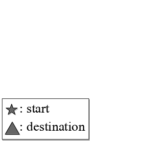
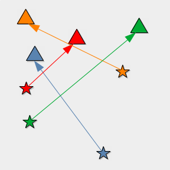
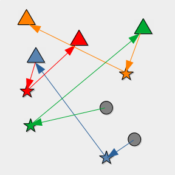
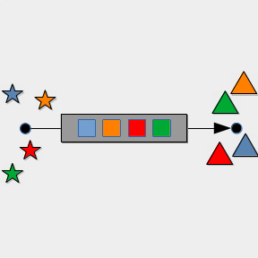
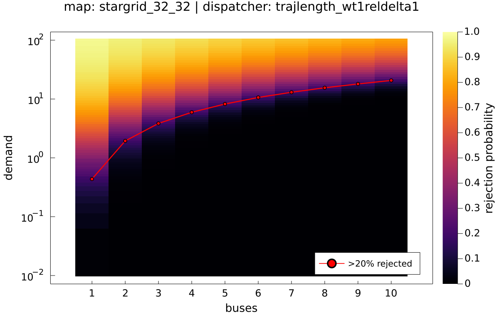
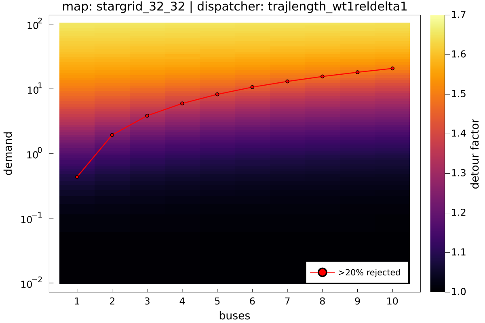
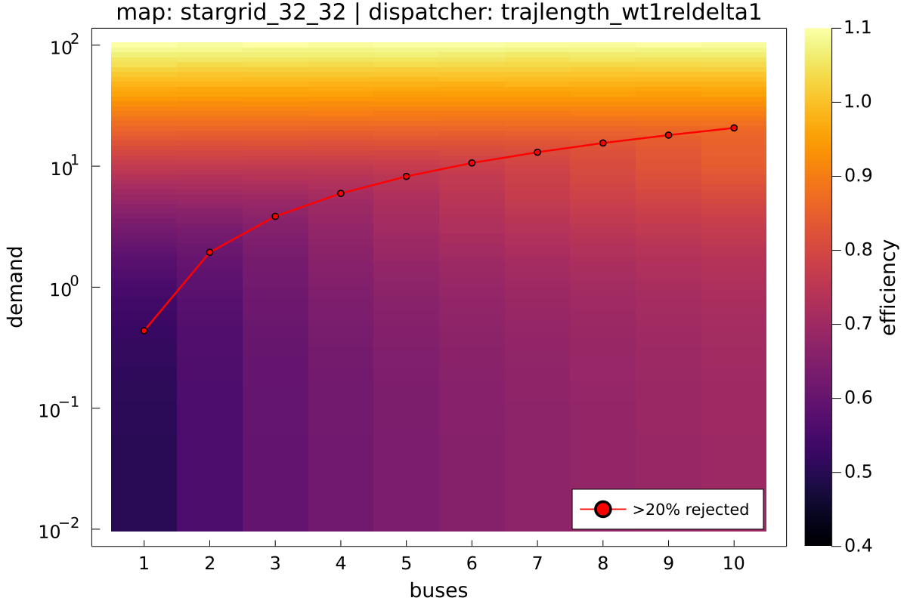
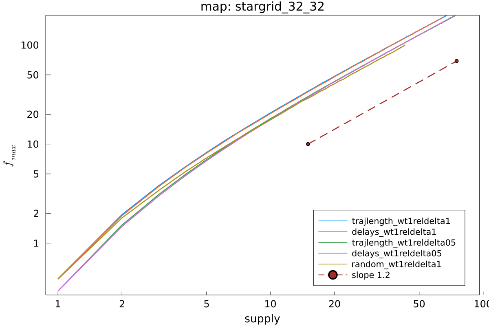

Mini-symposium 21.10.2021
"Ride Pooling" / "Demand-Responsive Transport" / "Ecobus Project"
 |
 |
|
|
|
Private car  very convenient. inefficient. |
Taxi  convenient. inefficient. |
Ride pooling (shared taxi) |
Line service  |
ingredients:
|
served percentage
detours

\[
\eta=\dfrac{\langle\text{occupancy}\rangle}{\langle\text{detour}\rangle}=:\text{"efficiency"}
\] |
efficiency
Supply-demand equation
..if there's timesystem capacity

Summary
|
Projects
|